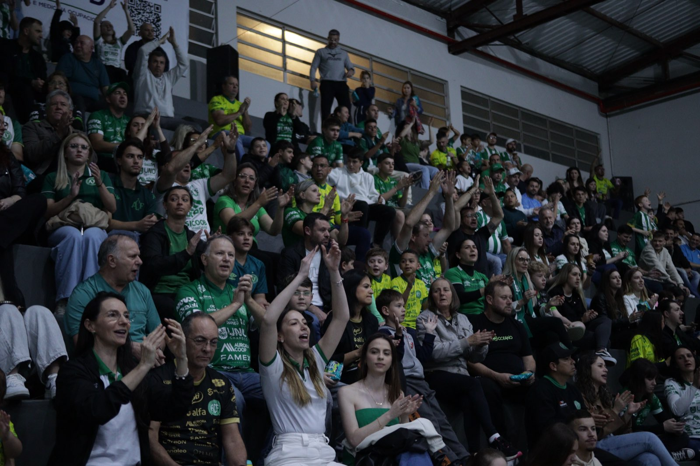

Estão à venda os ingressos para o confronto decisivo entre Prefeitura de Chapecó/Chapecoense/Unochapecó e Criciúma, pela volta das quartas de final do Campeonato Brasileiro de Futsal. A partida será neste sábado (31), às 17h, no ginásio do SESC, em Chapecó. Após vencer o primeiro duelo por 2 a 1, fora de casa, o Verdão das Quadras precisa apenas de um empate para garantir a classificação à semifinal.
Os ingressos custam R$ 25 no primeiro lote, R$ 30 no segundo e R$ 15 a meia-entrada, destinada às pessoas com direito ao benefício previsto em lei. Sócios-torcedores têm acesso mediante apresentação da carteirinha. Todos os torcedores, incluindo sócios, deverão levar um quilo de alimento não perecível. As doações serão destinadas ao programa Mesa Brasil, do SESC. Crianças de até 12 anos não pagam, desde que acompanhadas por um responsável e com documento de identidade.
Onde comprar
A venda antecipada ocorre em dois pontos físicos de Chapecó: na loja Chape Futsal Oficial, localizada na rua Paulo Marques, entre as avenidas Fernando Machado e Porto Alegre, anexa à Classic Uniformes; e na iXap Sports, na avenida Getúlio Vargas, entre as ruas Paulo Marques e Vitório Cella. Também é possível adquirir os bilhetes pela internet, nos sites chapecoensefutsal.com.br e ingressojogo.com.br. Haverá venda na bilheteria do ginásio no dia da partida.
Decisão da vaga
A Chapecoense joga por uma vitória ou empate para avançar entre os quatro melhores do Brasileiro. O Criciúma precisa vencer no tempo normal, independentemente do placar, para levar a disputa à prorrogação. Igualdade em eventual tempo extra leva a disputa aos pênaltis. O confronto definirá um dos semifinalistas da competição.

Fotos: Roger Silva/Chape Futsal